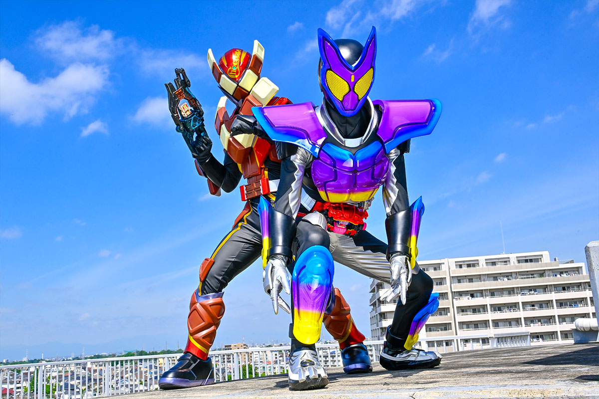
2024年から放送された「仮面ライダーガヴ」に登場する仮面ライダー
変身者はショウマ。ガヴというお腹についた特殊な器官を使い変身する。
スペックは今までの主役ライダーの中で最弱クラスだが、
変身者自体が優れた身体能力を持っているため、ほかのライダーとの差はそこまでないと思いたい。
基本形態はポッピングミフォーム。
身長：192.9cm 体重：72.3kg パンチ力：1.0t キック力:2.0t ジャンプ力：ひと跳び4.2m 走力：100mを7.6秒程度
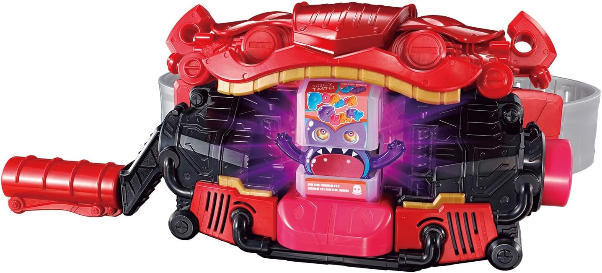
ガヴにゴチゾウと呼ばれる眷属をセットし、レバーを回し咀嚼。
ボタンを押すことでゴチゾウの力を開放し、変身する。
変身に使ったゴチゾウは消滅する。
腹にある口なので歯磨きをしないと虫歯になるぞ。
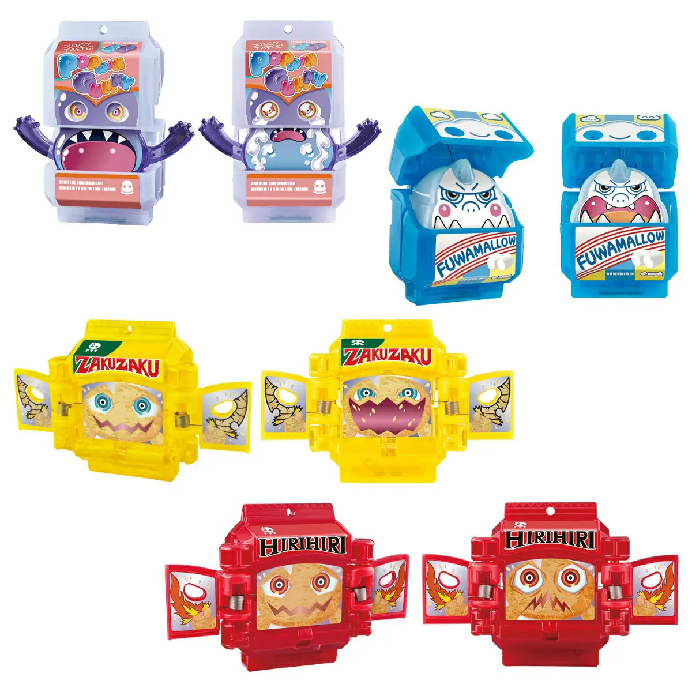
お菓子を食べることでガヴから放出される眷属。
食べたお菓子の力を宿しており、１回食べるだけでも複数放出されることもある。
偵察や援護を行うこともできる。
主人のために喜んで命を捧げる健気な奴ら。
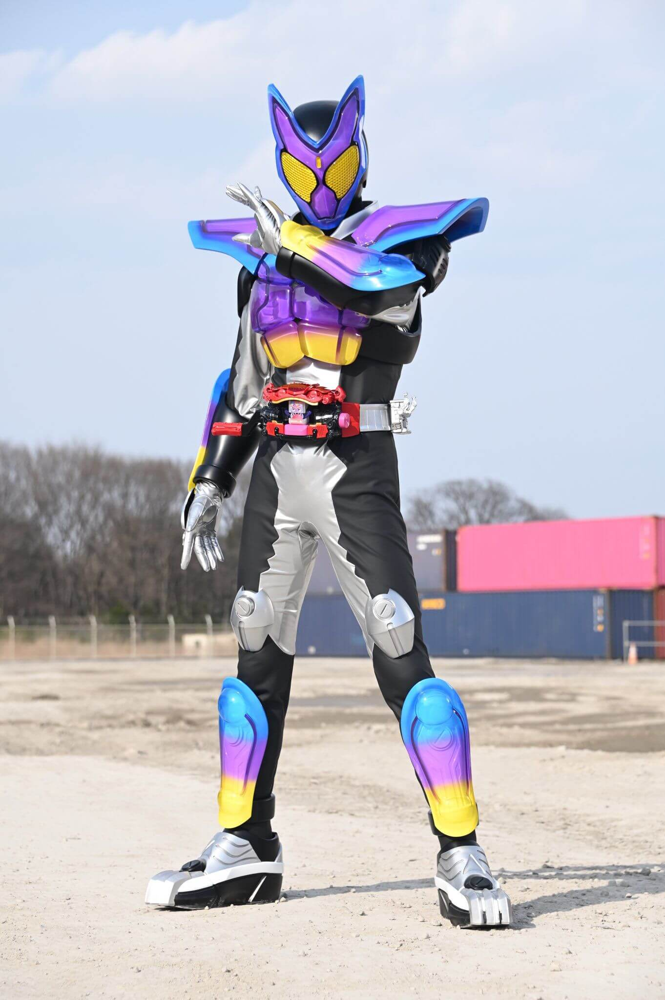
ポッピングミフォーム
「ポッピングミ」ゴチゾウで変身
グミ特有の弾力を生かし、攻撃の衝撃を和らげる。
他のグミのゴチゾウを使うことで追加武装をつけることができる。
装甲が破壊された際には、追加でゴチゾウを消費することで装甲を作ることができる。
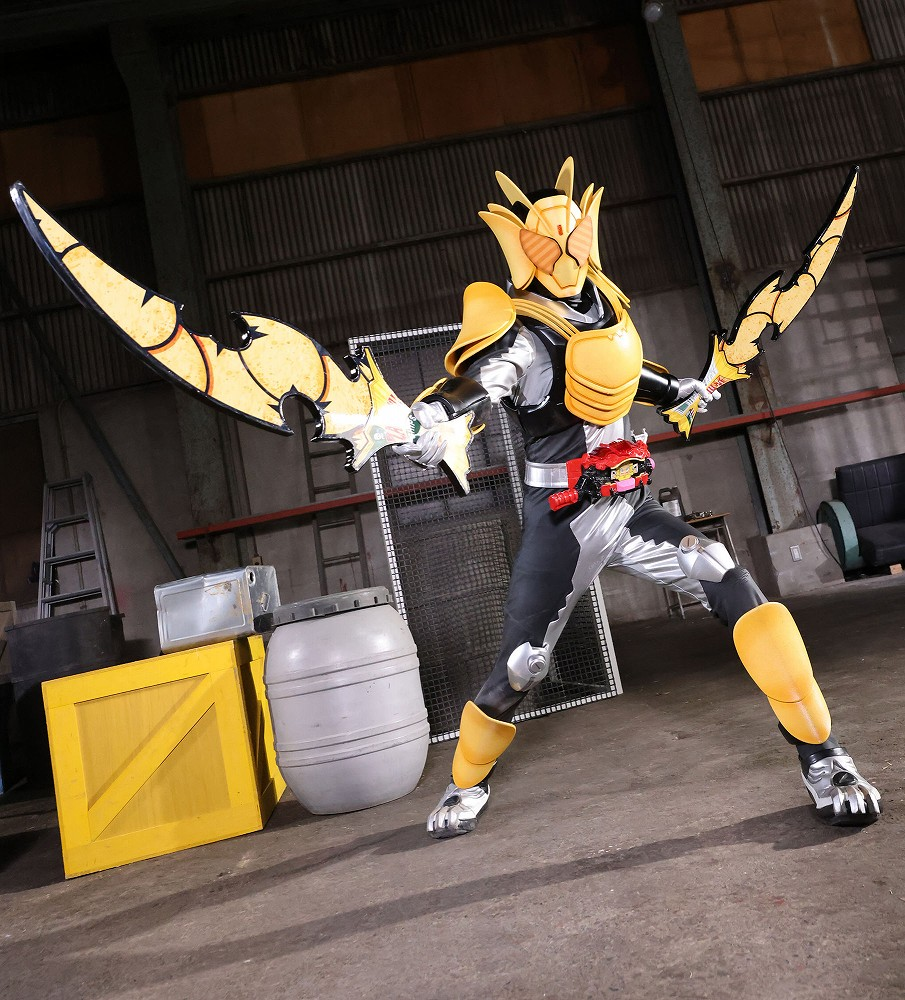
ザクザクチップスフォーム
「ザクザクチップス」ゴチゾウで変身
剣型武器ザクザクチップスラッシャーを使用した戦闘スタイルが得意。
ザクザクチップスラッシャーは斬る際に角度が重要で、正しい角度でないと刀身がチップスのように砕けてしまう。
しかし、直ぐ再生するため、砕けること自体はそこまでデメリットではない。
砕けたチップスでダメージを与えることもできるため、わざと砕けさせ、攻撃ソースを増やす戦法も可能。
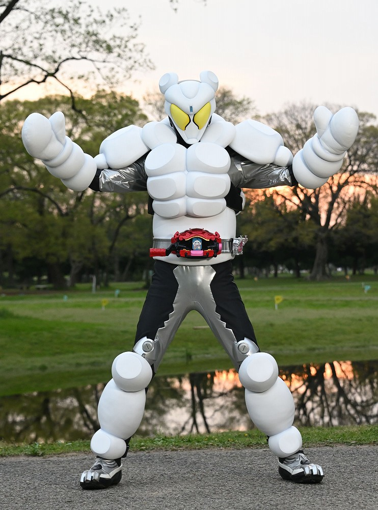
ふわマロフォーム
「ふわマロ」ゴチゾウで変身
マシュマロ型の装甲に包まれており、優れた衝撃吸収能力を持つ。
空中を浮遊する「フワ」という文字につかまり、空中浮遊をすることが可能。
攻撃手段は少ないが、攻撃吸収や空中浮遊などのサポートに特化したフォーム。
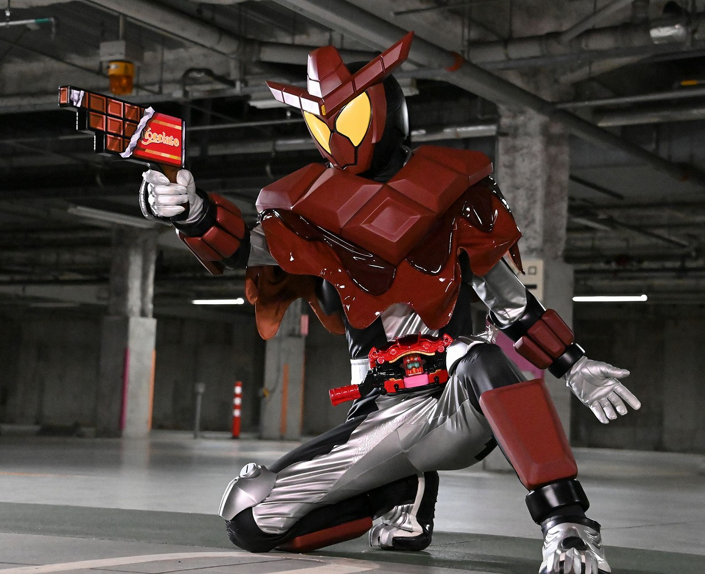
チョコダンフォーム
「チョコダン」ゴチゾウで変身
銃撃戦に特化したフォーム
専用武器チョコダンガンを使用し、チョコレートの弾を発射することができる。
威力はそこまで高くないものの、チョコの弾は相手に当たった瞬間破裂し、相手に付着する。
付着したチョコで相手の動きを制限することも可能。
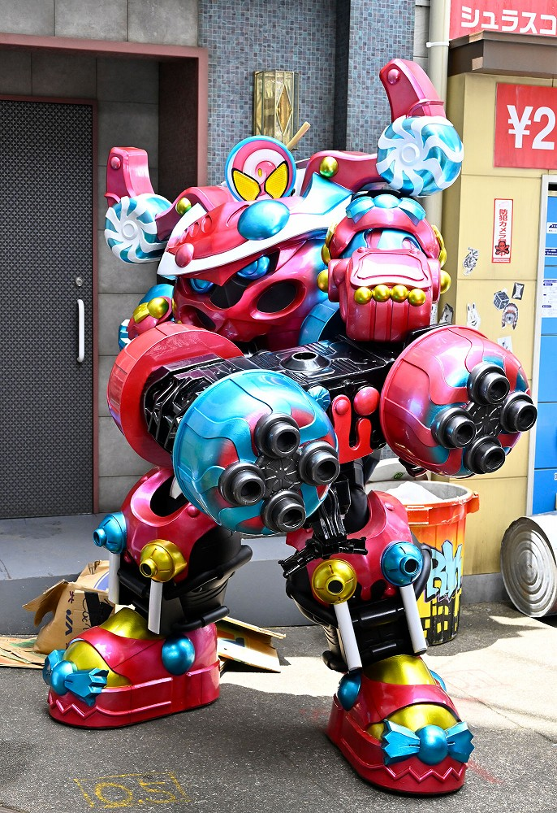
グルキャンフォーム
「グルキャン」ゴチゾウで変身
重量、防御力に優れたフォーム
高密度の装甲により、生半可な攻撃を無効化する。
バイクであるブルキャンをガトリングに変形させたブルキャンガトリングを使用し、一方的に殲滅可能。
他の並列フォームがかすむほどの性能を誇る。妙に強い。
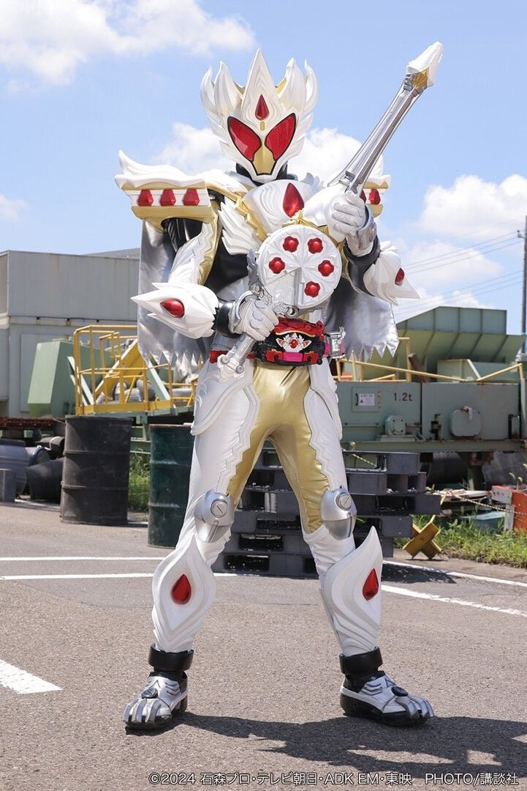
ケーキングフォーム
「ケーキング」ゴチゾウで変身
特殊なゴチゾウで、使っても消滅しない。
専用武器「ガヴホイッピア」からクリーム状の弾を射出するほか、
ホイップ兵と呼ばれる兵隊を召喚し、一緒に戦うことが可能。
ホイップ兵にゴチゾウの力を分け与えることもでき、全フォームの中でも汎用性がトップクラスに高い。
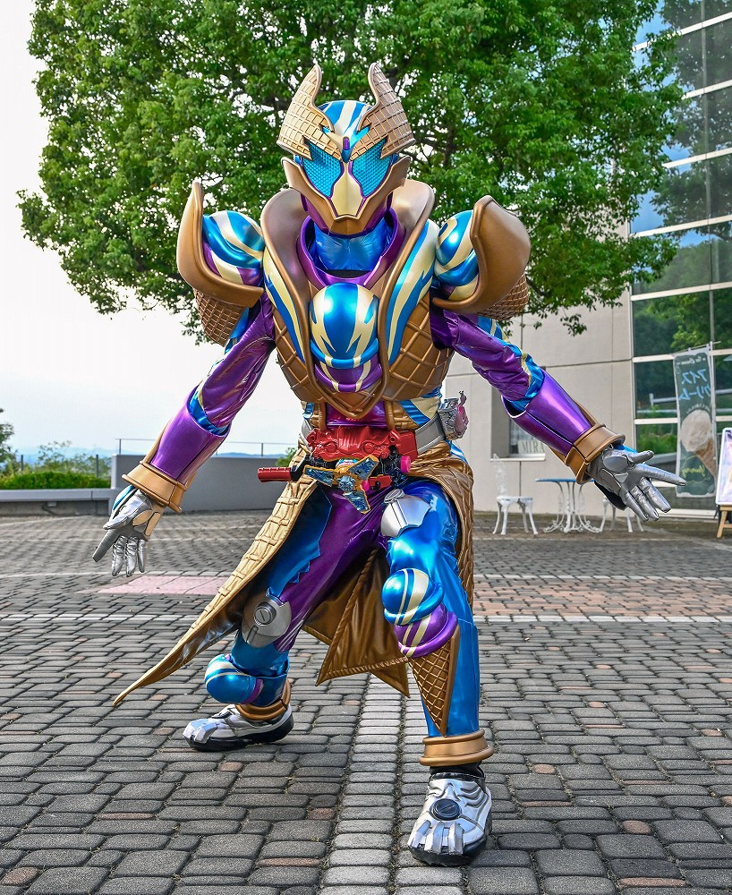
ブリザードソルベフォーム
「ブリザードソルベエ」ゴチゾウで変身
強力な凍結能力を持つ。
一瞬で氷の山を作り出し、足場にしたり、防御手段にすることができる。
戦闘力は高いものの熱により、ゴチゾウが溶けてしまえば変身が強制的に解除されてしまう。
夏場は数十秒も持たない。
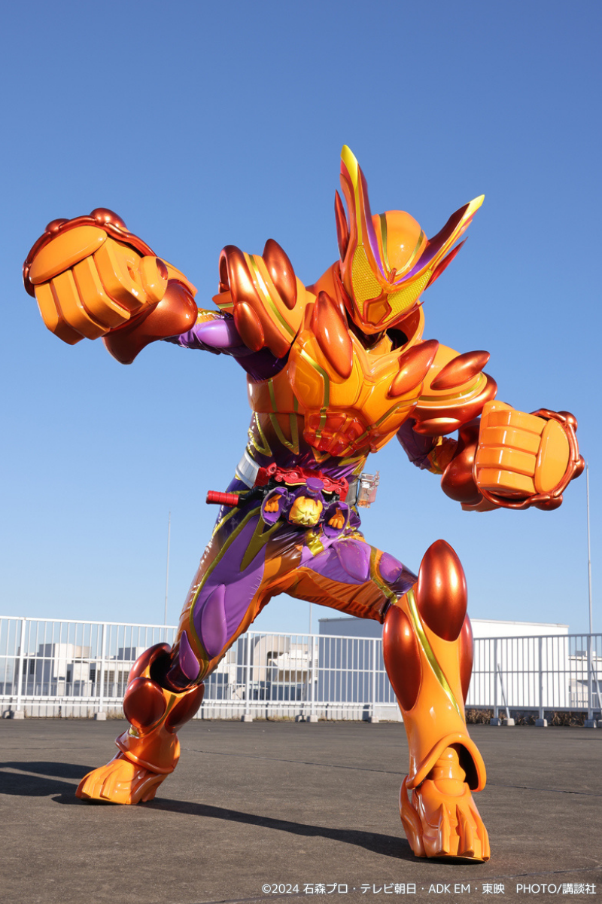
オーバーモード
「ゴチポッド」で変身
変身の際に１００体のゴチゾウを使用し、ゴチポッドと呼ばれるポッドを満タンにする必要がある。
スピードは死んだが、攻撃力が超強化され、１発パンチを放つだけで山がえぐれる。
スピードがないため攻撃をかわされる場合が多いので、マスターモードとの併用が前提。
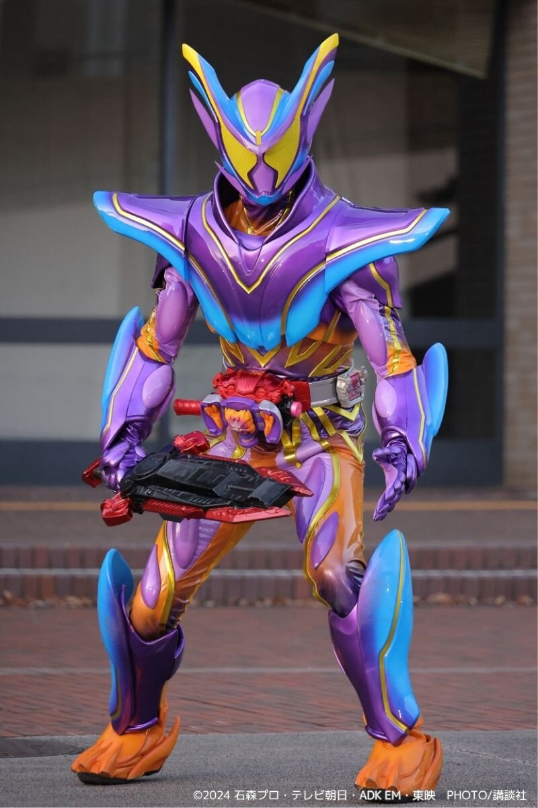
マスターモード
「ゴチポッド」で変身
ゴチポッドを反転させることでオーバーモードから切り替えることで変身できる。
これまでのゴチゾウの武器をすべて使用可能。
また、全フォーム中最速のスピードを持っており、一瞬で相手の懐に潜り込み、オーバーモードに切り替え一発叩き込む。
二つのモードを使い分け戦うことが前提。普通に燃費が悪い。
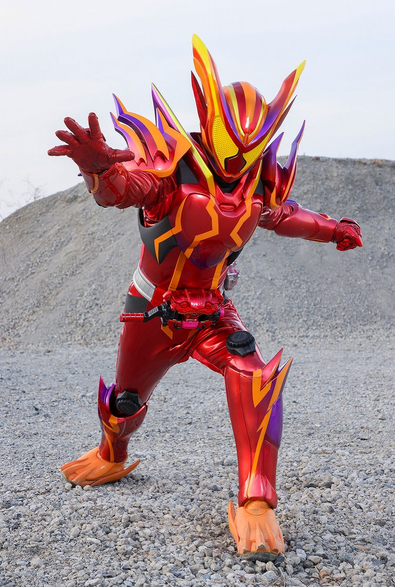
アメイジンググミ
「アメイジンググミゴチゾウ」で変身
ショウマの不屈の闘志から生み出された形態であり、周期の空気をゆがませるほどの高熱を発している。
灼熱を帯びた前進各部は接触しただけで敵にダメージを与える。
赤熱する手は相手の装甲を融解させ、通常では傷一つつかない装甲もこの形態の前では無力となる。
変身したのは本編中１回。イレギュラーな経緯から生まれた形態のため、再登場は難しい。
フィギュアの出来が悪くて炎上した。
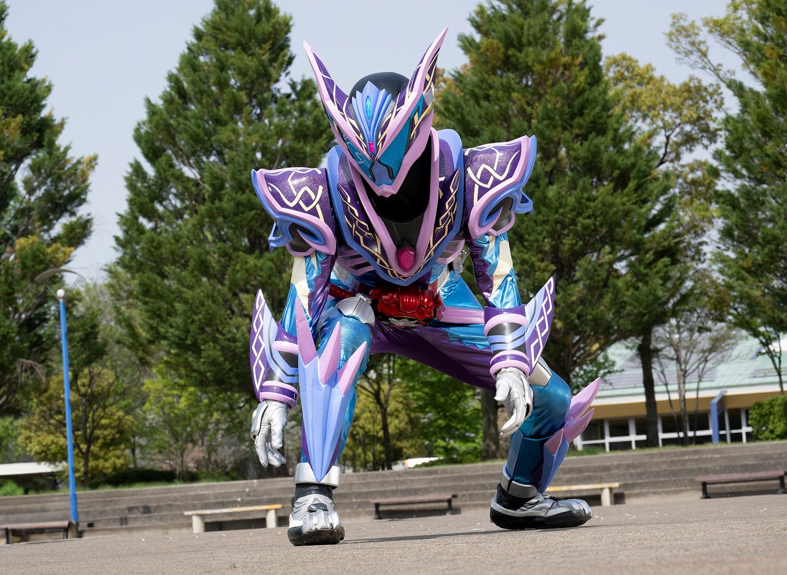
ヘクセンハイム
「ヘクセンハイムゴチゾウ」で変身
お菓子の家をモチーフにした形態であり、ビジュアルは仮面ライダーよりグラニュートに近い。
ミューターと呼ばれる別世界の怪人が持つ特殊細菌への抗体作用をもっており、
攻撃を与えることで、敵の体内に直接力を送り込み、内部から崩壊させる。
虫歯特攻形態。
仮面ライダー一覧